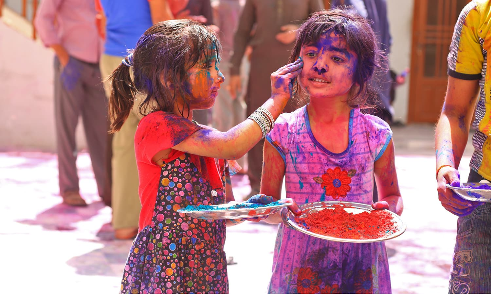

Holi is considered as one of the most revered and celebrated festivals of India and it is celebrated in almost every part of the country. It is also sometimes called as the “festival of love” as on this day people get to unite together forgetting all resentments and all types of bad feeling towards each other. The great Indian festival lasts for a day and a night, which starts in the evening of Purnima or the Full Moon Day in the month of Falgun. It is celebrated with the name Holika Dahan or Choti Holi on first evening of the festival and the following day is called Holi. In different parts of the country it is known with different names.
The vibrancy of colors is something that brings in a lot of positivity in our lives and Holi being the festival of colours is actually a day worth rejoicing. Holi is a famous Hindu festival that is celebrated in every part of India with utmost joy and enthusiasm. The ritual starts by lighting up the bonfire one day before the day of Holi and this process symbolizes the triumph of good over the bad. On the day of Holi people play with colours with their friends and families and in evening they show love and respect to their close ones with Abeer.